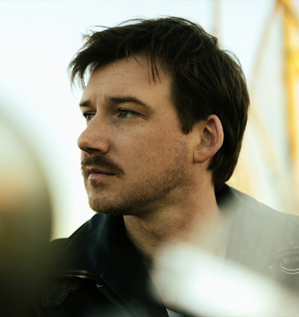

About Morgan Wallen
From Tennessee beginnings to country music stages

Biography
Morgan Wallen is an American country singer whose story connects music, sports, and the influence of his Tennessee upbringing. Born in Sneedville, Tennessee, he reached a national television audience as a contestant on The Voice in 2014. That appearance became one step in a career that later expanded into successful recordings and large live performances.
Before music became his profession, Wallen spent much of his childhood playing baseball. He developed as a shortstop and pitcher, but an elbow injury disrupted his plans to continue in the sport. Music offered another direction. His early experiences included singing in church and learning instruments, giving him a creative foundation to revisit when his athletic plans changed.
Wallen’s recording career includes Dangerous: The Double Album, One Thing at a Time, and his fourth studio album, I’m the Problem. Big Loud’s artist biography describes the sustained chart presence of his recordings and his progression into stadium performances. These milestones show how far his public career has grown beyond his early television appearance. His body of work gives visitors a practical starting point for exploring his development as a recording artist.
His connection to baseball also appears in his community work. In 2023, the Morgan Wallen Foundation presented a $100,000 donation to help improve the baseball field at Bessemer Park in Chicago. The planned improvements included a new backstop, upgraded dugouts, and work on the playing surface to support different levels of play. The project linked his public platform with opportunities for young people to participate in a sport that mattered in his own life.